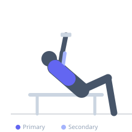
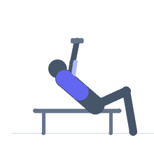

Exercise guide / Incline Bench Dumbbell Pullover
Incline Bench Dumbbell Pullover
A dumbbell pullover performed with the torso on an incline bench, changing the arc of motion compared to a flat pullover. The incline alters which fibers of the pectoralis major and latissimus dorsi are under greatest stress throughout the movement. The serratus anterior and long head of the triceps also contribute significantly, making this a unique exercise that spans both chest and back training.
Primary muscles
pectoralis major sternal
latissimus dorsi
Secondary muscles
triceps long head
pectoralis minor
Stabilizers
trapezius upper
Equipment
Dumbbell (Fixed)
Adjustable Bench (Incline / Decline)


Starting position
- Lie on an incline bench set to 30–45 degrees. Hold one dumbbell with both hands (overlapping grip on the inner plate). Begin with the dumbbell above the chest, arms extended.
Setup
- Set the incline to 30–45 degrees. The incline changes the arc compared to a flat pullover, shifting the muscle emphasis slightly. Lie fully on the bench with the head at the top.
Steps
- Step 1: Begin with arms extended above the chest, dumbbell held with both hands.
- Step 2: Keeping elbows slightly bent, arc the dumbbell back over the head and toward the floor.
- Step 3: Lower until the arms are roughly in line with the torso or slightly past — stop when tension diminishes.
- Step 4: Bring the dumbbell back along the same arc to the starting position above the chest.
Coaching cues
- Lead with the elbows slightly — this keeps the chest in the movement
- Think of the arc as a circle — the dumbbell traces a consistent path around your shoulder joint
Breathing
- Inhale on the way back (expansion), exhale on the return to start.
Range of motion
- Arc back until arms approach parallel with torso or slightly past — stop at the first sign of shoulder discomfort.
Tempo
- 3-1-2-1 (3s arc back, 1s stretch, 2s return, 1s squeeze)
Common mistakes
- Bending elbows too much, turning it into a triceps extension
- Going too far back and losing control of the dumbbell
- Using too heavy a dumbbell that compromises the arc control
Safety
- Avoid excessive range of motion — the shoulder is at risk of impingement if forced past comfortable range
- Keep a firm grip on the dumbbell throughout; it can slip if the hands are sweaty
Training
- hypertrophy: 10–15 reps
- hypertrophy: 3–4 sets
- Rest: {'hypertrophy': 75}